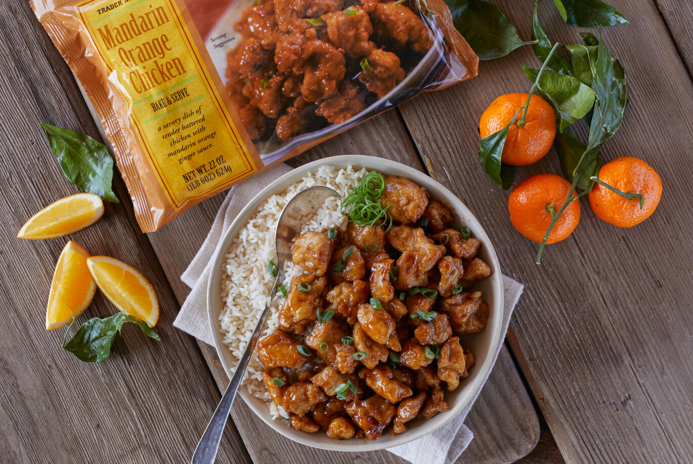

Trader Joe's Orange Chicken

- One bag of Trader Joe's Orange Chicken
- 1 tbsp oil
- Heat your skillet with 1 tbsp oil to medium heat
- Open the broccoli bag and empty its contents into the skillet
- Cook until soft
- Remove broccoli from skillet
- Turn the stove up to medium/high heat. Place beef into the skillet
- Heat until cooked through and golden brown
- Put broccoli back into the skillet with the beef
- Empty sauce packets into the skillet
- Cook for 1-3 minutes
- Serve and enjoy